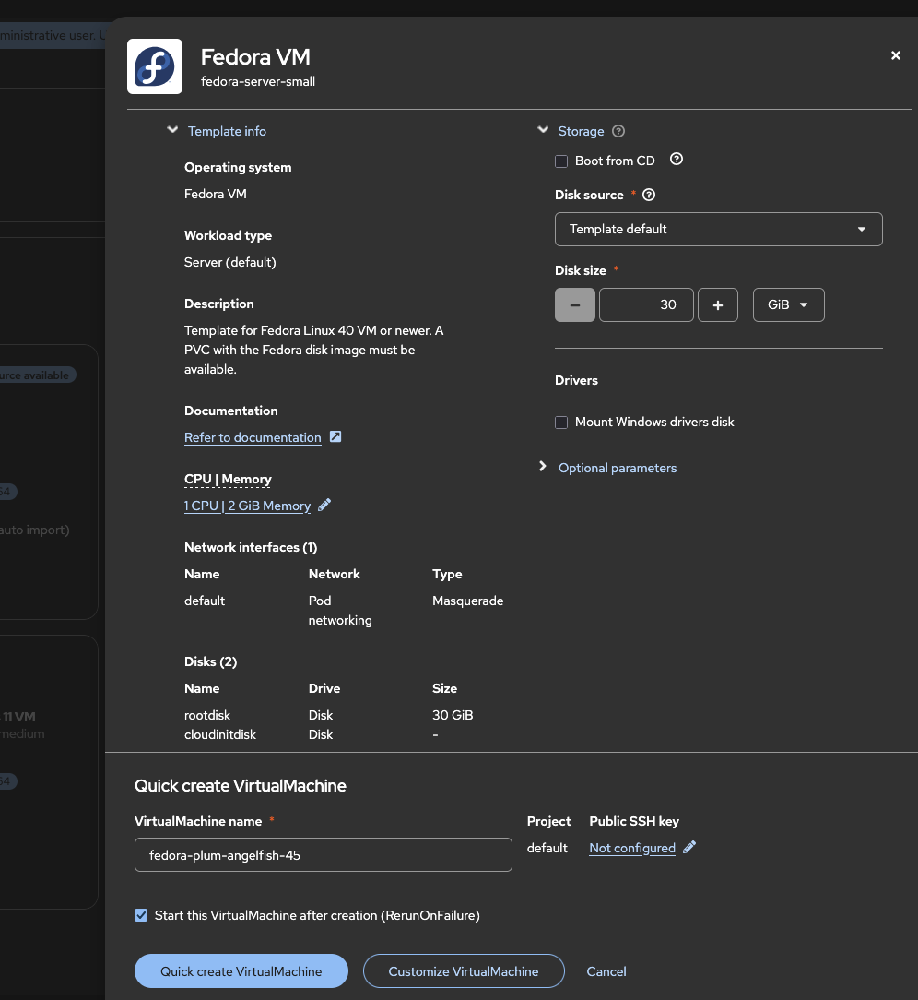
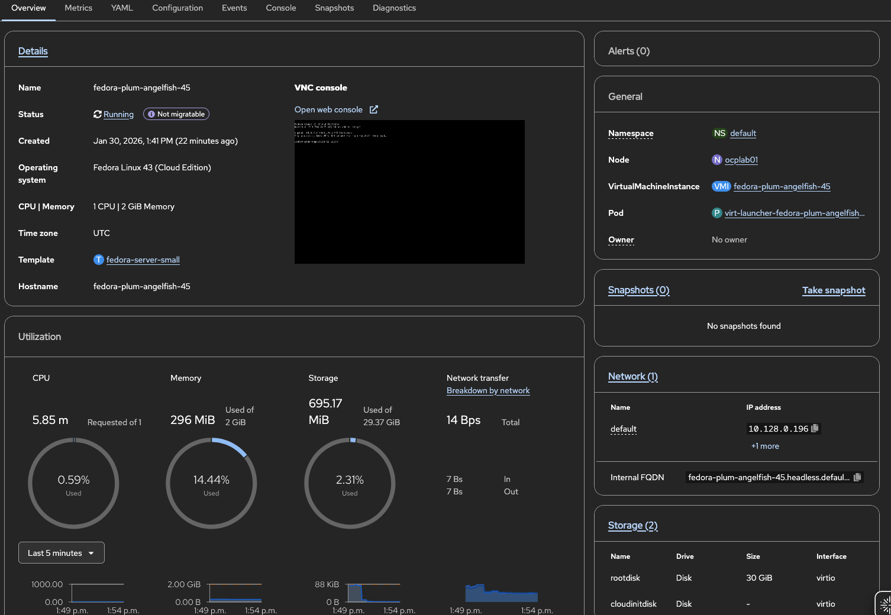

Creating VMs from Web Console Using Templates
Overview
This tutorial demonstrates how to create virtual machines using the OpenShift web console and pre-built templates. The web console provides an intuitive graphical interface for VM management, making it an ideal starting point for new users.
Prerequisites
-
OpenShift 4.18+ with OpenShift Virtualization operator installed (see Installing OpenShift Virtualization)
-
Access to the OpenShift web console with permissions to create VMs
-
A default StorageClass configured for VM disk provisioning
-
Available boot source images (DataSources) in the cluster
Verify boot sources are available:
oc get datasources -n openshift-virtualization-os-imagesStep 1: Access the Virtualization Section
-
Log in to the OpenShift web console
-
In the left navigation menu, click Virtualization
-
Click VirtualMachines to see the VM management interface

The VirtualMachines page displays all VMs in the selected project, along with their status and basic information.
Step 2: Browse Available Templates
OpenShift Virtualization includes pre-configured templates for common operating systems.
-
From the VirtualMachines page, click Create → From template
-
Browse the available templates organized by operating system:
-
Red Hat Enterprise Linux - Various RHEL versions
-
Fedora - Latest Fedora releases
-
CentOS Stream - CentOS Stream versions
-
Microsoft Windows - Windows Server and Desktop versions
-

| Templates showing Source available have pre-configured boot sources ready to use. This requires a default StorageClass to be configured in your cluster. |
Each template includes:
-
Pre-configured CPU and memory settings
-
Appropriate disk size for the OS
-
Boot source reference (DataSource)
-
Cloud-init or sysprep configuration (where applicable)
Step 3: Create a VM from a Template
This example creates a Fedora VM. The process is similar for other operating systems.
Select the Template
-
Click on the Fedora template tile
-
Review the template details shown in the side panel
-
Click Customize VirtualMachine

Configure VM Details
On the Customize VirtualMachine page, configure the VM settings in the Overview tab:
-
Name: Enter a name for your VM (e.g.,
fedora-test-vm) -
Project: Select the project (namespace) where the VM will be created
-
Boot source: Should show the Fedora DataSource by default
-
CPU: Adjust the number of CPU cores (default is typically 1)
-
Memory: Adjust RAM allocation (default varies by template)


Step 4: Monitor VM Creation
After clicking Create, you are redirected to the VM details page.
Track Provisioning Progress
The VM goes through several phases during creation:
-
Provisioning - The disk is being cloned from the boot source
-
Starting - The VM is booting (if start was selected)
-
Running - The VM is fully operational

Monitor the Events tab to see detailed provisioning steps:
# Alternatively, watch events from CLI
oc get events -n <your-namespace> --field-selector involvedObject.name=<vm-name> -w
Step 5: Access the VM Console
The web console provides direct access to the VM’s graphical console.
Open the Console
-
On the VM details page, click the Console tab
-
The VNC console loads directly in the browser

Console Options
The console toolbar provides the following options:
-
Send key - Send special key combinations (Ctrl+Alt+Del, etc.)
-
Disconnect - Close the console connection
-
Guest credentials - Username and password when the template provides them
| For better performance, consider using SSH access for Linux VMs or RDP for Windows VMs instead of the web console for regular work. |
Guest Login
For Fedora and other cloud images, the default credentials depend on cloud-init configuration:
-
If no cloud-init user data was provided, you may need to set up a user
-
Check the template documentation for default credentials
-
Consider customizing cloud-init in the template for automated user setup
Step 6: Basic VM Operations
The web console provides easy access to common VM operations.

Stop a VM
-
Click Actions → Stop
-
Confirm the action if prompted
-
The VM gracefully shuts down
# CLI equivalent
virtctl stop <vm-name>Restart a VM
-
Click Actions → Restart
-
The VM performs a graceful restart
# CLI equivalent
virtctl restart <vm-name>Pause and Unpause
Pausing a VM freezes its state without shutting down:
-
Click Actions → Pause
-
The VM state is preserved in memory
-
Click Actions → Unpause to resume
| Paused VMs still consume memory resources on the node. |
Delete a VM
-
Click Actions → Delete
-
Choose whether to delete associated disks (PVCs)
-
Confirm the deletion

| To preserve the VM disk (DataVolume) after deletion, uncheck the Delete disk option shown in the confirmation dialog. This allows you to reuse the disk with a new VM later. |
| Deleting a VM with its disks is permanent. Ensure you have backups if needed. |
Step 7: View VM Details and Metrics
The VM details page provides monitoring and configuration information.
Overview Tab
Shows key information at a glance:
-
VM status and conditions
-
IP addresses (when guest agent is installed)
-
CPU and memory utilization
-
Boot order and devices


Creating VMs with Quick Create
For faster VM creation with defaults, use the quick create option.
-
From the VirtualMachines page, click Create → From template
-
Select a template
-
Instead of Customize VirtualMachine, click Quick create VirtualMachine
-
The VM is created immediately with default settings

This is useful for:
-
Testing and development environments
-
When default template settings are acceptable
-
Rapid prototyping
Summary
You have learned how to:
-
Navigate to the Virtualization section in the web console
-
Browse and select VM templates
-
Create a VM with customized settings
-
Monitor VM provisioning progress
-
Access the VM console through the web browser
-
Perform basic VM operations (stop, start, restart, delete)
-
View VM details and metrics
Next Steps
-
Learn virtctl CLI - Command-line VM management
-
Configure cloud-init - Automate VM configuration
-
Set up SSH access - Connect to Linux VMs via SSH